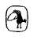

Cemal Kafadar
Kim var imiş biz
burada yoğ iken
Dört Osmanlı: Yeniçeri, Tüccar, Derviş ve Hatun
Cemal Kafadar, halen Harvard Üniversitesi Ortadoğu Tarihi Bölümü'nde öğretim üyesi. Between Two Worlds: The Construction of the Ottoman State (İki Dünya Âresinde) adlı OsmanlI'nın kuruluş düzenini anlattığı 1995 tarihli bir kitabı bulunmaktadır.
